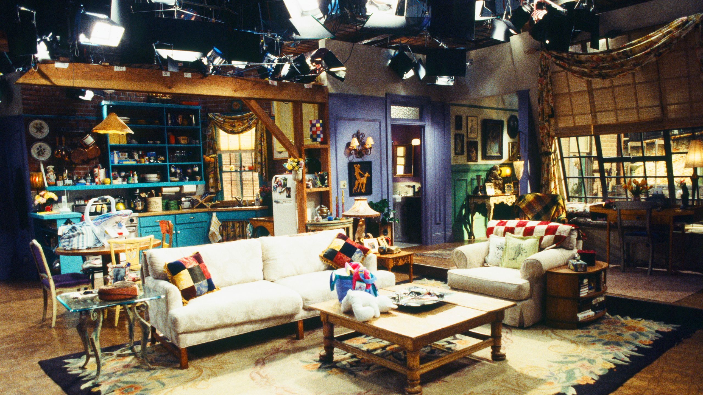
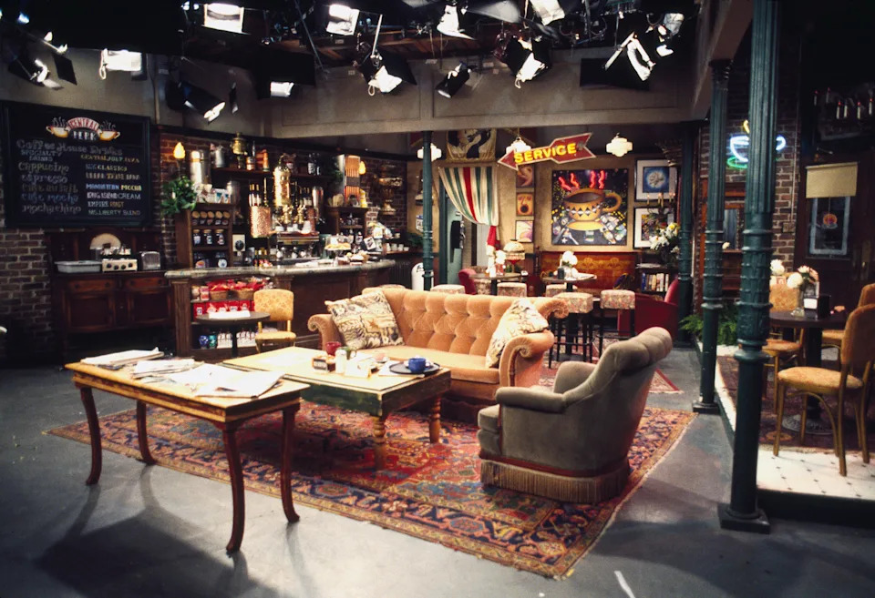
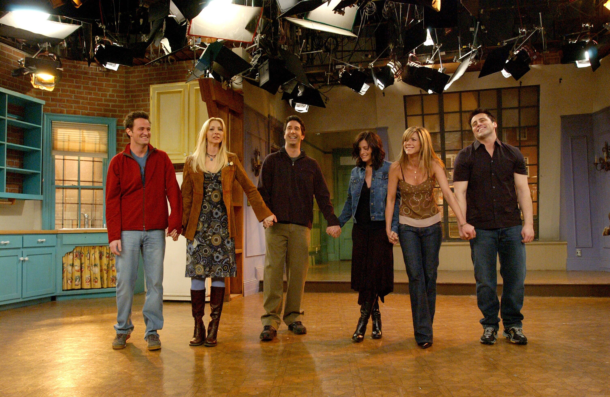
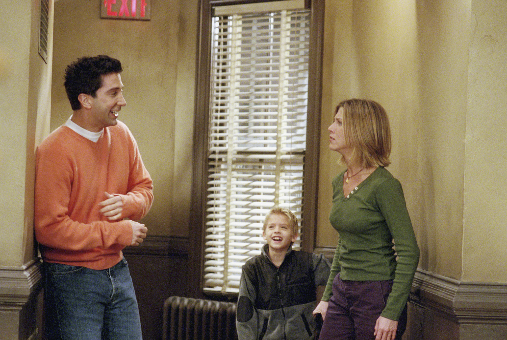
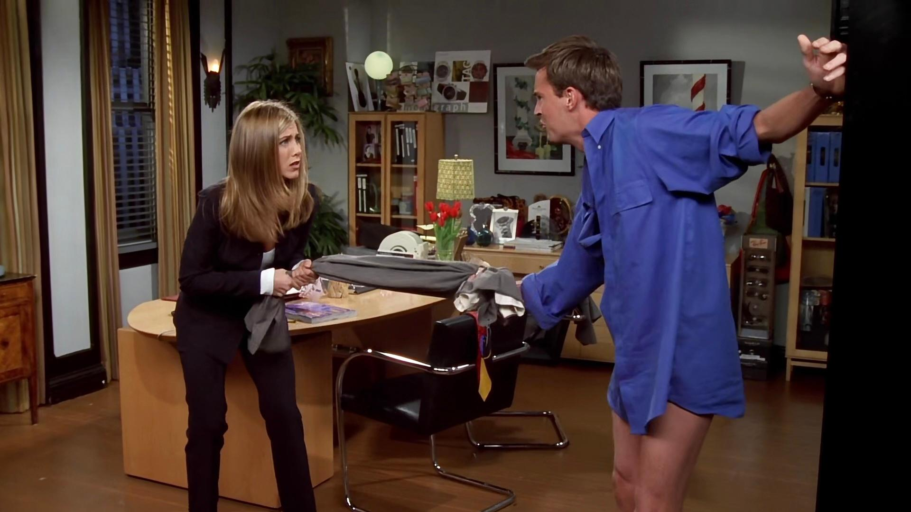

Production
It's about sex, love, relationships, careers, a time in your life when everything's possible. And it's about friendship because when you're single and in the city, your friends are your family.
Conception
David Crane and Marta Kauffman began developing three new television pilots — which would premiere in the Fall 1994 season — following the cancellation of their sitcom, Family Album, by CBS in November 1993. Kauffman and Crane decided to pitch the series about "six people in their 20's making their way in Manhattan" to NBC, which they felt best suited the network's style. Crane and Kauffman presented the idea to their production partner Kevin Bright, who had served as executive producer on their HBO series Dream On. The idea for the series was conceived when Crane and Kauffman began thinking about the time when they had finished college and started living by themselves in New York; Kauffman believed they were looking at a time when the future was "more of a question mark". They found the concept to be interesting, as they believed "everybody knows that feeling", and because it was also how they felt about their own lives at the time. The team titled the series Insomnia Cafe (other working titles included Across the Hall, Six of One and Friends Like Us), and pitched the idea as a seven-page treatment to NBC in December 1993.
At the same time, Warren Littlefield, the then-president of NBC Entertainment, was seeking a comedy involving young people living together and sharing expenses. Littlefield wanted the group to share memorable periods of their lives with friends, who had become "new, surrogate family members". However, Littlefield found difficulty in bringing the concept to life, and found the scripts developed by NBC to be terrible. When Kauffman, Crane and Bright pitched Insomnia Cafe, Littlefield was impressed that they knew who their characters were. NBC bought the idea as a put pilot, meaning they risked financial penalties if the pilot was not filmed. Kauffman and Crane began writing a pilot script for a show now titled Friends Like Us, which took three days to write. Littlefield wanted the series to represent Generation X and explore a new kind of tribal bonding, but the trio did not share his vision. Crane argued that it was not a series for one generation, and wanted to produce a series that everyone would enjoy watching. NBC liked the pilot script and ordered the series under another title, Six of One, mainly due to the similar title it shared with the ABC sitcom These Friends of Mine.
Casting
Having worked with David Schwimmer in the past, the series creators wrote the character of Ross Geller with him in mind, and he was the first actor cast. Courteney Cox wanted to play the role of Monica Geller because she liked the "strong" character, but the producers had her in mind to play Rachel Green because of her "cheery, upbeat energy", which was not how they envisioned Monica; after Cox's audition, though, Kauffman agreed with Cox, and she got the role. When Matt LeBlanc auditioned for Joey Tribbiani, he put a "different spin" on the character. He played Joey more simple-minded than intended and gave the character heart. Although Crane and Kauffman did not want LeBlanc for the role at the time, they were told by the network to cast him. Jennifer Aniston, Matthew Perry and Lisa Kudrow were cast as Rachel, Chandler Bing and Phoebe Buffay based on their auditions. Perry and Aniston, both still under contract to other shows that year, LAX 2194 and Muddling Through, were cast days before shooting of the pilot began.
More changes occurred to the series's storylines during the casting process. The writers found that they had to adjust the characters they had written to suit the actors, and the discovery process of the characters occurred throughout the first season. Kauffman acknowledged that Joey's character became "this whole new being", and that "it wasn't until we did the first Thanksgiving episode that we realized how much fun Monica's neuroses are."
Filming + Sets
-

-

The first season was shot on Stage 5 at Warner Bros. Studios in Burbank, California. NBC executives had worried that the coffee house setting was too hip and asked for the series to be set in a diner, but eventually consented to the coffee house concept. The opening title sequence was filmed in a fountain at the Warner Bros. Ranch at 4:00 am, while it was particularly cold for a Burbank morning.At the beginning of the second season, production moved to the larger Stage 24, which was renamed The Friends Stage after the series finale.
Filming for the series began during the summer of 1994 in front of a live audience, who were given a summary of the series to familiarize themselves with the six main characters. A hired comedian entertained the studio audience between takes. Each 22-minute episode took six hours to film —twice the length of most sitcom tapings— mainly due to the several retakes and rewrites of the script.
Although the producers always wanted to find the right stories to take advantage of being on location, Friends was never shot in New York. Bright felt that filming outside the studio made episodes less funny, even when shooting on the lot outside, and that the live audience was an integral part of the series. When the series was criticized for incorrectly depicting New York, with the financially struggling group of friends being able to afford huge apartments, Bright noted that the set had to be big enough for the cameras, lighting, and "for the audience to be able to see what's going on". The apartments also needed to provide a place for the actors to execute the actions in the scripts.
The cast became very emotional while filming the final episode. Jennifer Aniston explained, "We're like very delicate china right now, and we're speeding toward a brick wall."
Improvised Scenes
-

"The Last One" on Youtube -
As Rachel suggests the group of six central characters get some coffee together before going their separate ways, Chandler agrees, before sarcastically asking, “Where?” This line is a clever multi-layered reference to Central Perk, the cafe where the group hangs out together throughout the show, from its pilot right up to this finale episode.
The line makes fun of the fact that they never seem to go for coffee anywhere else in New York, while paying homage to an ever-present setting in the sitcom. But it’s also a wry inside joke from actor Matthew Perry, referencing the destruction of the Central Perk set, which had already happened before the shooting of this final scene.
-

“The One with the Truth about London” on Youtube -
In Season 7's "The One With the Truth About London," Rachel is tasked with watching Ross' son Ben (played by Cole Sprouse), and finds her own enjoyment in teaching him practical jokes, particularly pulling them on Ross, who's nonetheless displeased about Rachel's irresponsibility.
Determined to be known as Ben's fun aunt, Rachel keeps teaching him pranks to use against Ross, upping the ante each time and eventually causing Ross to chase Ben out of the apartment and up a flight of stairs, only to fall all the way down at Rachel's feet. Only, it's not Ross, though, but a dummy dressed like him, with Rachel realizing she's been the victim of a payback prank pulled by Ross and Ben working together.
Not only is this prank devious in the show, it was also genuinely pulled on Jennifer Aniston, who did not know about this twist and thought she just saw her co-star genuinely fall down the stairs. Rachel's horrified scream at seeing Ross fall, along with Sprouse and Schwimmer's laughter at her falling for it, is too realistic to be acting.
-

“The One with the Cuffs” on Youtube -
In "The One With the Cuffs," Chandler is in the midst of an affair with Rachel's boss, Joanna (Alison La Placa), which Rachel is none the wiser about. After Joanna is pulled away from a fling in her office for a meeting, Chandler ends up handcuffed to her chair for hours and is eventually caught by Rachel, who's upset with him for jeopardizing her career with his love life. Rachel reluctantly frees him, only to re-handcuff him to a file cabinet after realizing she could get in trouble for entering her boss' office while she's not there.
While arguing, Chandler makes a sudden movement with his handcuffed hand, pulling open the file cabinet and hitting himself in the head. Unbeknownst to many fans, DVD commentary revealed that the moment was a complete accident on Perry's part, but his ability to stay in character, despite Aniston looking completely shocked, sells it as scripted.